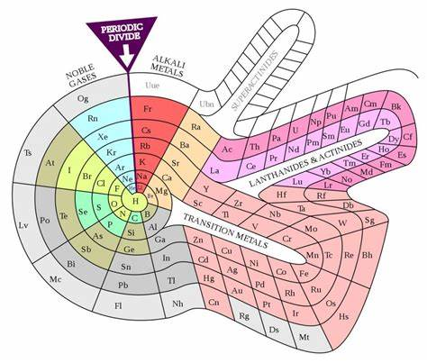
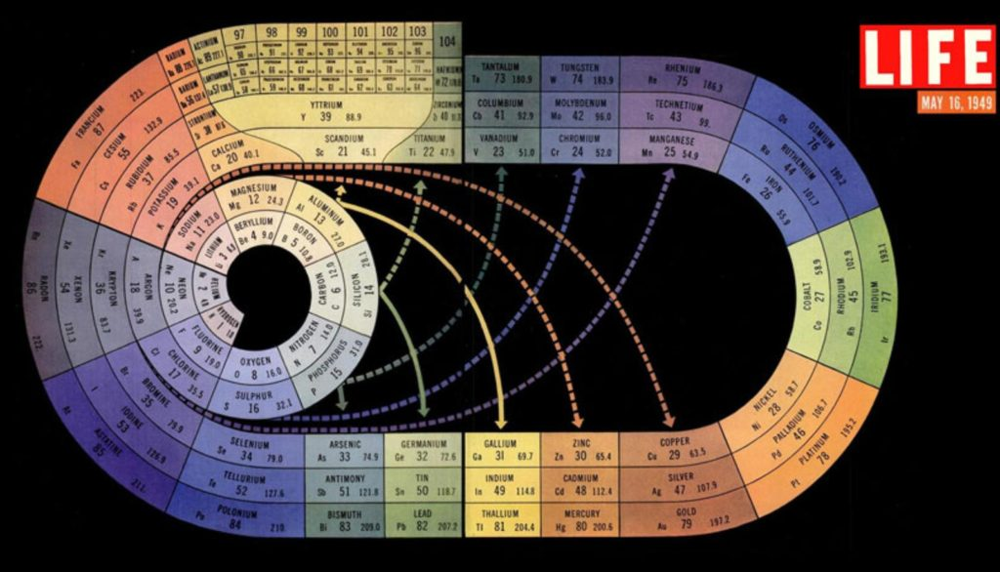
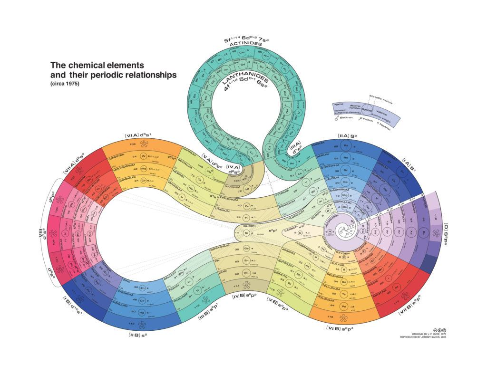
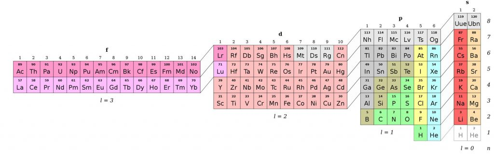
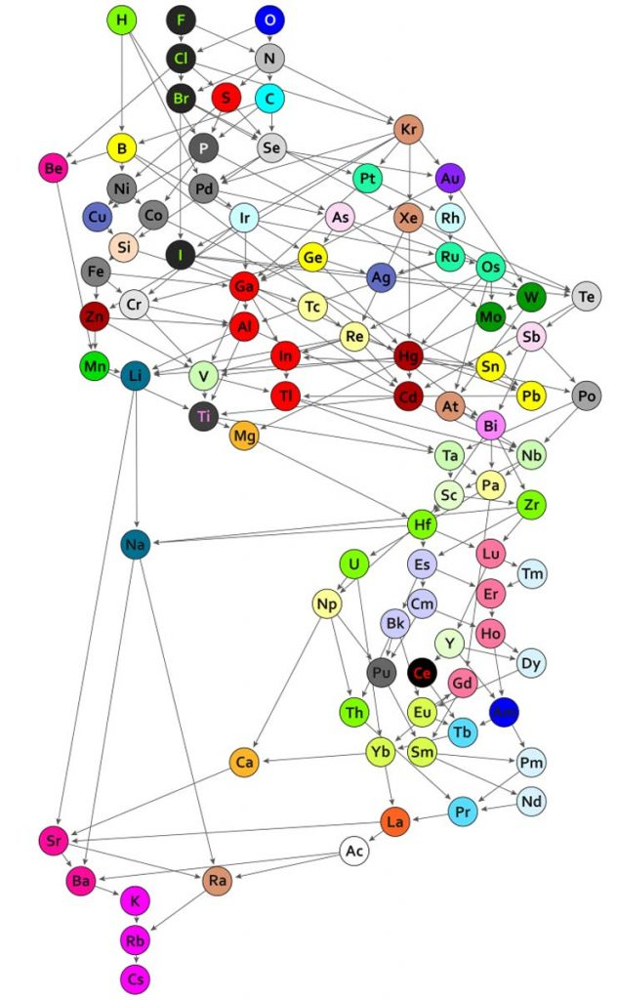

Here we continue with periodic questions that I ask the Domain Commander for clarification on. This is part 11.
Note: For those of you who are new here, this article continues a Q&A dialog with an extraterrestrial "Commander" and a retired MAJestic operative who is still active with active EBP implants. Heavy stuff. But not for trivial reading. This is part of the Q&A (on-going) effort where questions are provided to me, and then I present them, and then record and interpret the responses.
[11.1a] Question – Death Metal Music
Questioner is correct. The frequency patterns associated with certain types of music and musical patterns act as keys that unlock "software programs" with are but associative mechanisms of quantum clusters. These particular ones are tied to a emotional / biological component that is shared with deep friendships and relationships between IS-BE entities. In the case of this particular questioner, the association that the entity has is "spot on". And the ability to uncloak the association shows a gentle unveiling of memory and quantum associations between the questioner, their friendships, relationships and "tribe membership" related to specific tasks, duties, and operational involvements in regards to prior activities. In this specific case, the operational associations were attuned to the frequencies and patterns associated with "death metal" and that is a comforting association associated with tribe membership and cadre belonging.
There seems to be a strong attachment for hard “death metal” Rock n’ roll, and membership as Domain Military.
It’s not absolute, of course. There are millions of people who love “death metal” and Hard Acid Rock, in certain forms. While there are just a few hundred imprisoned members of the Domain “Lost Battalion”. -MM
[11.1b] Question – Followup
Followup question from 11.1a…
Wow. I guess I want to ask if it’s possible to get specifics, like if this represents some of the relationships I had with my <redacted>, or some of the volunteers that came to operate on me or something. Or maybe I need to read something (a hint, I guess) so I can do a better job of recalling the relevant memory?
Questioner is fully cognizant of the implications of this. Questioner is in contact with some core <internal cadre, family members, close associations> who are part of the task team associated with questioner extraction. This is also facilitated with questioner mantid (sic) which is acting as a <relay point, transmission tower, injection / host, attribute appliance ?> in this effort. Questioner should not eject the feelings, emotions or thoughts in regards to this form of communication and the information thus provided.
[11.2a ] Question – Original members pre-mod
Pre-Old Empire Earth has been on my mind, and how it’s continued alongside the prison planet mods. And how quanta configurations/species work.
I would greatly appreciate it if you could ask the following:
What happened to the original members of the species modified to be used as inmate suits? Were they all altered/incarcerated or are there still free ones about?
The vast majority of the species present on the worlds that underwent the transformation of pre-Old Empire to Prison Complex were unmodified. The ONLY ones modified were those that served as the vehicles for inmate containers. In these cases, they were modified as follows... Inmate "Skin Suits" [1] Human [2] Horses [3] Elephants [4] Dolphins [5] Llamas [6] <a certain selection of minor creatures that are permitted to cohabit with unmodified versions of their species. Too numerous to list here. Feeling and thoughts on this subject is far larger than what I am able to place here. Listing above is "representative only".> Higher Energy "skin suits" [7] Mantid (human) [8] <not clear> (horses) [9] <not clear> (elephants) [10] <not clear> (dolphins) [11] <not clear> (Llamas) [12] others Functionally, all humans (with the exceptions of visitors) are inmates wearing "skin suits". For other species the issues is quite complex and would be far too confusing to elaborate on at this time. There is only <redacted, as there are too many issues involved in the dissemination of this information, and other "hand holding / learning exercises must be established first before this discussion can continue in meaningful detail.>
[11.2b ] Question – Visitation
Could a pre-prison planet human configuration be getting used by some to experience Earth while avoiding the incarceration loop?
Yes. Occasional human forms visit the prison complex in their natural suits, and are not affected by the influences by the prison complex. However they too have limitations, and are exposed to dangers in this prison complex that makes the visitation quite dangerous affairs. This is why they rarely visit the complex without accompaniment. Often visitations are in secure locations and under Domain supervisions. (With occasional supervision by approved third parties.)
[11.3 ] Question – High frequency sound
I never thought I would have a question for the Domain commander as most folks here at MM ask pretty relative questions, for the most part. From those Q & A’s I always gain some insight and some valuable intel. With that said, I do have one question.
I continuously hear (in my head) a constant frequency sound much like that of an OSHA sponsored hearing test. Most of the time, the frequency is at a constant high frequency tone. Other times, however, there will be lower tones, usually of short duration (no longer than a minute) as if the sine wave is ramping down to a slower Hz. Much like an electric motor controlled by a frequency inverter.
So, my question is this: Are these frequencies that I’m hearing part of thought monitoring and/or subliminal communication and by whom?
Sounds, as defined by the questioner, are not part of thought monitoring, or subliminal communication. Questioner is well known. Questioner is Domain volunteer. Questioner is modified. Questioner has a Domain support group. Questioner is monitored at various levels. This includes thoughts, and actions. No ill-will is intended, but rather the monitoring is for reasons of Domain usefulness. Situation is of self. The questioner is hearing the audible frequency of self. This is something that some oriental religions use to "home into" so as to focus on their meditations and "spiritual growth". Questioner, and numerous readers, have the ability to listen in on their frequencies of self. With practice they can "tune into" the frequencies of higher and lower selves, and even isolate the sounds that they pick up to isolate the various sub-components and harmonics of it. These are important skills for consciousness to use to isolate various elements of consciousness from the various non-physical bodies and elements. There is no danger in tuning into these sounds. The questioner is hearing the various limits and shapes of the frequency profiles of self and is developing a skill set that (inadvertently) came into being after some (of his) non-physical skin suits were modified by Domain.
[11.4] Question – Feedback on Mantid Videos
This is a direct communication between MM and the Commander. I want to know how accurate, or inaccurate I am in the descriptions as to what Mantids are.
They are accurate.
It was a terse answer with no further detail. And perhaps with (a kind of) disgust directed at me that I am questioning my guidance. I wanted some “feedback” on my effort. I was not expecting this. -MM
[11.5 ] Question – Rainbow lines
I have been seeing these pulsating rainbow lines and am wondering what they are? They are very thin like fishing line and form a diamond like pattern of a net. I can only see it when I’m really concentrating on the area around me. A friend said I should bring it up with the commander. Am I catching glimpses of traps?
Thank you for all that you do.
Questioner has a distortion that affects the visual interpretation of physical reality as viewed by the synapses in the brain. This is not of serious concern. It is something that sometimes occurs when there is an activation of "higher sensory perception" <trigger chambers?> in the non-physical bodies. This is a sensory overload that results from a data transmission path that is congested or blocked and overwhelms the sensory mechanisms in the biological <caprice, object, body, system> of the individual. This is nothing to be overly concerned about. If questioner desires to enhance this skill-set instead of discounting it as a physical manifestation of a on-going situational input stimulus, then the questioner can do so and discover some non-physical senses would be enhanced though the stimulation.
[11.6] Question – Non-physical effects of nuclear bombs
it was mentioned in AI that Airl’s crew were investigating the effects of nuclear bombs being tested when their ship crashed in Roswell.
There has also been various reports of UFOs buzzing facilities housing nuclear weapons. Apart from the obvious effects of fallout etc affecting the physical world, do these weapons do damage to the non physical worlds as well?
If so what kind of damage can on expect to find in, say, a non physical bubble universe directly “next” (for lack of a better word) to this one if a nuclear weapon is detonated here? What sort of damage did Chernobyl do?
Nuclear weapons are very dangerous. They create great physical and non-physical damage. The weapons that were unleashed in this (geographic region of space) by their wars of conquest (by the Old Empire) created a great loss for many species, and all their spiritual components. This region of space was at one time a very lush, rich and prosperous regions of all manner of species of all sizes and shapes. However, after their ruinous wars they devastated the land and "salted it" for many, many millions of years. The physical devastation is clear and well understood by most MM readers. What is not understood is the magnitude of the destruction. It was complete and "primitive" at a level that reduced everything to near primeval states. The non-physical destruction was horrific. In fact, for a long time, the non-physical regions of this geographic region of space are "danger zones" and normal actions are not possible; it's a ruinous (non-physical) land of dangers, and strange unexpected interactions between thought and physical components. As such, thoughts can create undesirable effects, and all sorts of bad, and undesirable things can happen if sucked into these minefields" of voids. This is why the Old Empire chose this region (partially) for the prison complex. The nature of the non-physical geography is in itself; very dangerous traps and snares.
[11.7] Question – Feedback on the Heaven Videos
This is a direct communication between MM and the Commander. I want to know how accurate, or inaccurate I am in the descriptions as to what the structure of the main, reality, and heaven universes are.
The videos are effective for the purposes intended. At this point in time, no further detail is needed, were there to be greater detail, we will provide it and you will transcribe it as is your duty.
Sigh. -MM
[11.8] Question -Connection to Domain
Questioner has a prior contract with Domain. (Before this present life-line, in another body, and at another time. -MM) This is the questioners second try in escaping this prison complex. Prior life (reincarnation) questioner tried / attempted to pray his way out of the complex. (Image of priest, church, religious setting, much praying. Catholic cross, and religious iconology.) This was unsuccessful. Upon death, questioner was tricked / manipulated by his mantid self into the warm embrace of (earth time) forgotten loves, associations and friends, and was led back (yet again) into the Heaven pocket universe. Questioner was contacted by Domain at that point <non-physical> and was working with mantid resources and Domain liaison to create this (present) low-potential escape-way. Questioner is further along in escape and departure / egress than what was initially expected. Questioner departed from highest probability path by unexpected event chain and is now here in the MM "state of mind".
[11.9] Question – Searching for answers
I have a feeling, a strong feeling that who you were referring to as ” Old Empire” was myself.
I have no memories at all re this but in all honesty it has been my gut feeling since I started this journey with you.
I am rattled and saddened greatly as I fell I quite possibly could have been OE military, it resonates sadly man, so much so I had tears, both of shame and joy when watching the vid,
The offer of a new home made me emotional, very much so.
I also feel I could be the first OE operative ( if it is my reality) in a position to leave but my transition to Domain will not be beer and skittles I would think, I have much shame” in knowing” and others may never accept me, it’s not what or who you are but who you can become yes?
MM I need one more thing mate please, really.
I need to know what I have done, like yourself and your construction parts history, The DC knows for certain and I need to fill that void in my memory. Only if I am worthy of knowing though. I guess reconstruction of my quanta will also take place. If what I feel is correct then I am so so sorry and will have to carry my shame forever.
Love to you man hey, really
<redacted>
Entity was Old Empire as described. Questioner fled into the "Prison Complex" upon it's unit defeat in the battled of <unclear, confused, garble> (Impression I have is of a space battle in and around our solar system). Questioner fled into the complex knowing the consequences of such an action. Questioner, at that time, greatly feared Domain. His superiors and "news / telecommunication" mediums filled the population with great fears. It was used to control them, and they were terrified of Domain capture and the punishments that they could look forward to. Questioner felt (at that time) that a life inside the Old Empire Prison complex was more desirable to that of the "Hell" that awaited it under Domain. Questioner voluntarily entered soul and consciousness segregation and partitioning. It's "mantid(s)" established "camouflage" templates for it to exist within. (Whereas most Old Empire leadership would enter the prison complex and set up templates of luxury, and ornate power, this entity was military, and it's thoughts were in terms of survival, evasion and escape. The templates have all been "average", and nothing that would stand out of the normal.) Questioner was a military member of "Old Empire". Was talented and practiced. It was a career militarist, and was not of the same kind of "evil" and corrupt character as the Old Empire Leadership was. Questioner's shame is misplaced. Domain have no problems with this prior combatant, and view it as "paid it's price". In fact, many time worse than what the Domain would have done were it not to have fled and escaped as it has. Domain consider this entity to have long "paid it's dues" and wish to welcome it and embrace it as one of it's own. Domain welcomes it's parolee outside of the Prison Complex that it finds itself in.
Translation: Domain welcomes the questioner to leave the Prison Complex with no ill feelings. Even join Domain if that is the desire of the entity. -MM
[11.10] Question – Seth
I’d like to ask the Commander if they can tell us whether a series of books known as ‘The Seth Material’ is a genuine communication, over many years, between a now deceased human named ‘Jane Roberts’ and a disembodied entity named ‘Seth’, or if it’s (a very clever) hoax.
The reason I ask is that, like most folks on here, I expect, I’m a big seeker after Truth, and the Seth Material entity speaks very much like a member of The Domain– at least in my limited understanding he does. Much of what Airl and the Domain Commander ‘speak of’ is also spoken of by Seth; except he never mentions a Prison Planet. He also speaks of what Metallicman has been reporting about for years now: True nature of reality and the universe; individual paths along the MWI; quantum reality and thoughts as real substance.
If Seth is genuine, I believe these works would be a great resource– lots and lots of helpful detail– for any Metallicman followers, in that Seth also goes into ‘prayer campaigns’– focused thoughts– in a LOT of detail, and the importance of doing good works and directing one’s thinking toward positive outcomes, and much more besides. It’s a fascinating alternative glimpse into true reality and if it’s a hoax, it’s a brilliant one. Seth also has quite the sense of humour as the Domain and Mantids do, too.
Interestingly, Seth also says that ‘revelations’ from his kind ‘are permitted’ about once every 30 years or so to many people around the world and are not really reported on for obvious reasons in this statist society. I thought it was interesting that Metallicman’s works are a generation or so after Seth, and could be a continuation of a process that the Domain knows about– or some inter-dimensional grouping known to the Domain; kind of like what D.M. has referred to.
Lastly, Seth also speaks of the importance of action, rather than thought or reflection as ends in themselves– and that human beings are creatures of action; and need to ‘be active’ in order to live fully, or be complete. A much maligned practice in the world of the metaverse we know inhabit. The Commander also spoke of this action, too. I recall their messages about contemplation/meditation not being of much use as far as escaping the Prison Planet reality– rather, activated and focused thought along with unselfish RUFUS-like behaviour is the way out.
Just a few too many coincidences as far as I’m concerned! Metallicman has provided us with his own unique human insights about his experience, but Seth to me sounds like a true resident of the Never Never. But he has lived numerous lives on Earth– and confirms that we all do.
MM can attest that his mother was a follower of Seth. Seth is one venue out of many that are busy providing egress paths for people to follow. Questioner must recognize that there are many different kinds of people each one with greatly divergent pasts, knowledge and education. There is no singular path out of the Prison Complex, but many. Some paths require multiple incarnations to get to the point of egress. While other paths provide direct means and direct pathways; like superhighways. Questioner should realize that there is not relative "best" advisor for egress, but rather multiple "roadmaps". It depends on the person, and their method of travel. If one drove a car, then a travel map would be appropriate, while a different kind of map would be necessary were they to travel by helicopter. Seth is designed as a multi-stage egress platform / kit for use by certain seekers. MM is a different system, and it is designed for a different kind of person. The questioner has altered perceptions to embrace both methodology in their ultimate objectives.
Ah, you are “good to go”. -MM
[11.11a] Question – Law of One
Hi MM, thank you again for your extraordinary dedication to this ongoing communication. I’m not certain where questions are to be posted, so here is mine., background first:
Don Elkins and Carla Ruckert conducted and published a dialog with a spiritual IS-BE group who identified themself as Ra about 40 years ago. It was titled The Law Of One. The concept of sentience sorting into STO and STS polarities, as the main task to be completed in our current series of lifetimes, is presented as a plan assisted by them. This idea, although without any reference to a prison system, has striking similarities to the Commander’s messages.
Is Ra part of the Domain, part of the Mantid group, or neither of them?
The idea or concept of sorting into sentience (STO, STS, others) is a Domain requirement. This is unique to Domain. Domain is the administration control over this regions of physical space. No other group, no matter how powerful, or no matter what pedigree, has that authority. Sorting is the technique used to determine which consciousnesses can leave the Prison Complex, and which needs to stay. [1] Only Domain is able to make that judgement. [2] Only Domain is able to take that judgement on an individual consciousness and enable / permit egress out of prison. [3] Only Domain is able to grant parole to egressed inmates. [4] Only Domain has a system in place to take the orphaned consciousnesses and reconfigure their quantum makeup to regroup back to their former hive, matrix or other soul forms. Domain was active in dissemination of this understanding to the human population. We used different vehicles to do so. In this event sequence, the 80/20 rule manifested, of the entirety of contacts that obtained our direction (in various means including walk-ins) only 20% were able to disseminate the message regarding sentience sorting. This group that the questioner has referred to is one such group. And it has been successful in it's task. Yet why this sentience sorting HAD and NEEDED to occur wasn't always made clear to the audience. This resulted in some misunderstandings, as well as certain manipulations by "bad actors" for reasons of personal profit.
[11.11b] Question – Law of One
Is the idea of spiritual existence organized into density octaves of 7 levels each, which comprise a ‘journey’ of spiritual development back to the creator, valid?
It is a technique used to convey understanding. It is only as accurate as it's utility. MM provides understanding. It too, is only as accurate as it's utility. The purpose behind communication of this kind of arcane information is in regards to its utility in understanding. Different peoples understandings will vary from person to person. Thus the utility becomes different. There are many ways to group the periodic table of elements. Each grouping has it's own utility depending on who is using that table. If the questioner finds the Ra teachings of utility then it is advised to follow it.
I am providing some examples here for the reader to understand what the Commander is talking about. As it is comm with me, and uses my references to communicate.
Here’s the most common table. This is the one that most people think is the “correct one”.
Here’s other tables, in other forms and shapes, depending on the needs of the user. There is not “correct table”.





[11.11c] Question – Law of One
If so, can you reconcile/elaborate/integrate this idea of ‘Densities’ with regard to the Domain, Mantids, and MWI?
Thank You!
No.
Well, that was terse. Sheech! – MM
Please do not be taken aback by that abrupt and terse answer.
The imagery that I received was a discrete “package” that pretty much explains that terminology is associated with specific projects or actions. For instance, a “spanner wrench” is associated with automotive repair, while a MRI is associated with a medical procedure.
I got the distinct impression that the term “densities” is a “catch all” phrase used to describe things in a general manner. While the audience (herein) are far more advanced and other terms and systems should be used for more specific questions.
Which, of course, scares me. As I have to define the terms for each specific situation that we will get involved in. Yikes! Sounds like a heck of a lot of work for ol’ MM here.
Also, this is a big question. “Domain, Mantids, and MWI” include EVERYTHING that I (as MM) talk about. The impression that I have is that the readership are too mature and advanced to rely on simplistic terms. Anyways, that is the response that I obtained.
I would suggest some very specific questions related to your thoughts, experiences, or wonderings. Then we can go from there, and try to incorporate the ideas of “densities” with specific contexts.
[11.12] Question – Overwhelming Old Empire systems
- Earth is one of many prison complexes in operation.
- Human populations have been increasing for 10,000+ years, and relatively recently the population has exploded, increasing exponentially.
- Thus, earth seems to be a desirable destination for souls/ISBEs or are other prison complexes are closing down and souls need somewhere to be incarcerated – earth being the melting pot of nonconformity.
- If this is accurate, then mantid numbers must also be increasing (I assume 1 mantid per human/soul).
- If earth/humans are heading towards some cataclysm, per Deagal Forecast and USA actions, then is there a concern that heaven and the brain washing mechanisms can be overwhelmed when people go over to the other side (heaven), and if so what happens.
- Can the Domain comment on this and where are all these extra ISBEs, assuming I phrased my question understandably.
Answered carefully with an "alert chill". First off, the population of humans, dolphins, horses, elephants, etc is an illusion. They are empty containers for the most part (shadow people -MM) The actual inmate population is less than the apparent population of the earth. Not every container has an element of consciousness within it. The only ones of consequence are those that involve your consciousness. Secondly, the prison population has been growing for many years. However, this growth has slowed down considerably since Domain has acquired control over this sector. The only "new" souls are the constructed ones created in the Heaven pocket universes. These are constructs; much like MM is a construct from elements of Mades Escapleon. Third point. The Old Empire Prison Complex is under Domain control. It consists of multiple planetary systems. Each one has it's own unique issues, problems, and overall plans established by Domain. None are being phased out. Instead, rather, they are being refurbished as "parole centers" for those sentience's that are not yet ready for release. Fourth point. Mantid membership is a function of higher energy quanta. This is fixed, but associated with the lower energy consciousness. Since the population is mostly stable in the closed-cell environment, the number of mantids (sic) are stable. This includes the new constructed soul (derived) consciousnesses, as they too must have an associated higher energy (mantid GP and Prime) to function. Fifth Point. Domain is proceeding towards "small bads" instead of "Large Bads" in regards to the Deagal forecast. The transition stations are well populated and readied for an influx of pockets of consciousness. These will come in arrival grouping of clusters and will not overwhelm the strengthened systems that we have put in place. Contrary to the impressions that one might have from reading the <inaccurate?> Deagel report, the trend-lines will NOT be sudden, but will be an accumulation of event sequences that will increase the transition period for many humans from life to death. The change in the status quo will be gradual and occur over a period of time. It will not be sudden. It will manifest as a clear increase in the rate of death to a point where it becomes more noticeable than the media reports are to hide it.
I am a believer in the Deagel Report, but apparently the Commander believes things a tad differently.
It did not say that the report was wrong, but rather that the illusion that one might get from reading it will lead one towards erroneous conclusions as to what is actually going on. -MM
[11.13a] Question – an energetic sensation
Something happened to me today that hasn’t happened for awhile and I was wondering if the commander could shed some light on what it is (or you if you know the answer).
Sometimes, usually when i am driving, but can also be when I am just lounging around, I get this energetic sensation.
If you have ever had an operation and had morphine injected intravenously, it kind of feels like the initial part where it goes into your vein, how you get that sort of warm feeling that shoots all around your body. It’s like you can feel it in your blood coursing throughout your body. it is an incredibly potent feeling and makes one feel rather good and invincible; it is hard to not just sit there and veg out on its feeling.
It has a tendency to make you feel quite sleepy.
I have noticed that I get this when i think of specific things to do with my tasks, and some thoughts generate a more potent reaction to others.
Question: is this a “nudging” from a higher source, like the Domain, EG, Mantids etc, and if so who?
Questioner is getting input, or a higher energy nature, that is not generally normal for the standard skin suit. This is a function of his role within an organization that he has committed to, and the higher energy is designed to assist him in his tasks. The over all effect of this injection of energy is an awakening of latent (astral travel / LD / PSI / ESP) abilities. The questioner should find some skills arise from disuse in the near future. Perhaps in the late Spring or early Summer. It will depend on the energy partitioning with his partner. As he is the "capacitor" that is used to "charge" the energy streams with his direct partner. This is an agreed to alteration of his skin suit, and is in agreement with his mantid GP (sic). There is a transfer of certain quanta packages from the mantid cluster and reapportioning to "pockets" / key-ways in the non-physical bodies. The direction of this alteration of his non-physical body is the leadership of his parent organization. The participants of this action are his mantid GP (sic) and his partner.
[11.13b] Question – an energetic sensation
Question: Am I correct in assuming that it is nudging me towards a specific thought, and that if take those moment to rest I may receive a download of information.
Yes. The questioner is correct. In this case, the questioner needs to adjust to the alterations and then practice in handling the changes in input. The questioner needs to heighten awareness for the information discharge.
[11.14] Question – Fractional son
Questioner's son is a fractional. Fractional entities are IS-BEs who have been separated into multiple consciousness's and placed into different bodies for the purposes of control and "education" as determined by the mantid Primes (sic). Questioners son is a fractional with Domain elementals. We are monitoring this skin-suit and have a team engaged in the monitoring of the entity in question. All consciousnesses are treated as unique self-aware entities and are thus handled as individuals. Questioner cannot answer or relay information for this individual without subjecting it to risk and potential danger. It is the responsibility for the fractional itself to do so.
[11.15] Question
I think I’ve just connected with a lost battalion member.
She emailed me after coming across my site. She says she is another astral warrior and related some very familiar experiences of hers within the astral planes/ lucid dreaming, and being contacted by other non physical beings that randomly showed up (physically) and took her to what sounds like a similar place I went to.
She’s gone through all the astral training both me and <redacted> have gone through, including all the consciousness and timeline stuff.
I am wondering if the Domain are able to do a similar check on like they did with Miri’s baker friend? i plan on sending her your way, but not entirely sure how to proceed. MM, without going into details our conversation, if she is not Domain then, she is definitely some one special.
She said her ethereal name is Ayanna, Soul name is Sfeah, Human name is Tabatha, if that helps.
Target is not Domain. Target is (indeed) a very special consciousness. This consciousness is on a "fast track" towards egress from this prison planet environment though repeated (previous reincarnation) attempts. They are active in a number (not singular) "escape" groups. The are aggressive and already has a full escape plan in with association with your parent organization. They have already (step by step) reassembled their <portable / isolated> soul cluster outside of the Heaven pocket universe, and thus are already on their way towards egress independent of Domain assistance. Questioner is advised to respect this entity and provide assistance as they might request it to be.
[11.16] Question – Fate
You had an interesting story last year about a fellow who was fated to hang (it was his destiny). He was however, granted several wishes by a genie, but however he tried to change his fate, he was still hung.
My question then, can we escape our fate (destiny)?
For example, if we are fated to hang, can we escape the hangman’s noose and live a full enchanted life. Concurrently, nobody (or very few) actually know what their fate is, so how can we escape our fate without knowing what our fate is?
Fate is a function of the gravitational influences on the physical body. It can either be in relative favor, or relative disfavor. On a functional basis it can be viewed as a measure of the relative ease that a consciousness is able to exist within the prison complex environment. Destiny is a function of the world line template (sic). A consciousness can travel upon the template and alter the events that it may experience. However, all templates are predetermined by the mantid prime / consciousness within the pocket Heaven universe. The consciousness may elect to create a new template from which to occupy, but it requires a strong sense of will and concentrated power of thought. Unless maintained, the consciousness will default to the pre-birth world-line template (sic) and in that event the end of the life will be pre-determined. The only true and real way to escape this situation of living a fated template life is to exit the "reality universe" and enter the "main universe" while being part of a soul cluster of some type. Once that is accomplished, the idea of purpose in regards to physical experiences enters a completely different kind of understanding.
[11.17] Question – Tibetan Book of the Dead (Thödol)
A question to the Commander about the Tibetan Book of the Dead (Thödol) and its instructions, on which light to follow or not follow after death.
Are these buddhist texts wrong, should you not go into any light (bright or dull) at all, and instead of that stay calm and call the Domain for pickup?
How are these instructions in the Thödöl to be interpreted?
Where do they come from?
For clarifying, from the Tibetan Book of the Dead: HERE
In the first Bardo, the Chikhai Bardo, the deceased will experience the primary clear light at the last breath.
And a second clear light half an hour after the last expiration.
Both lights lead to freedom/liberation the Thödöl says.
But only holy men grab the moment it seems, ordinary people miss it and go into the second bardo after being three days unconscious.
Day 1 of the second bardo, the Chönyid Bardo, around the 4th day after dying: “Then, from the Central Realm, called the Spreading Forth of the Seed, the Bhagavān Vairochana, white in colour, and seated upon a lion-throne, bearing an eight-spoked wheel in his hand, and embraced by the Mother of the Space of Heaven, will manifest himself to thee.
It is the aggregate of matter resolved into its primordial state which is the blue light.
The Wisdom of the Dharma-Dhātu, blue in colour, shining, transparent, glorious, dazzling, from the heart of Vairochana as the Father-Mother, will shoot forth and strike against thee with a light so radiant that thou wilt scarcely be able to look at it.
Along with it, there will also shine a dull white light from the devas, which will strike against thee in thy front.
Thereupon, because of the power of bad karma, the glorious blue light of the Wisdom of the DharmaDhātu will produce in thee fear and terror, and thou wilt [with to] flee from it.
Thou wilt beget a fondness for the dull white light of the devas. At this stage, thou must not be awed by the divine blue light which will appear shining, dazzling, and glorious; and be not startled by it.
That is the light of the Tathagata called the Light of the Wisdom of the Dharma-Dhātu.
Put thy faith in it, believe in it firmly, and pray unto it, thinking in thy mind that it is the light proceeding from the heart of the Bhagavān Vairochana coming to receive thee while in the dangerous ambuscade of the Bardo.
That light is the light of the grace of Vairochana.
Be not fond of the dull white light of the devas. Be not attached [to it]; be not weak.
If thou be attached to it, thou wilt wander into the abodes of the devas and be drawn into the whirl of the Six Lokas.
That is an interruption to obstruct thee on the Path of Liberation.”
This will repeat every day for four days, going through all the colours, e.g the elements dissolving: blue, white, yellow, red, green – there is always a very bright light which leads to a heavenly realm – or a dull light which leads to a hell-realm. If you don’t follow these lights you will wander around in the next bardo (bardo being the state in-between) and be reborn in, on average, 7 weeks after dying according to the Thödöl.
This is deceptive. The observed appearance and manifestation of light that one experiences is a direct function of the resonance of the harmonics of the energy structure of the higher selves (mantid (sic)). It is true that the appearance can be used as an indicative measure of the terrain that the consciousness must endure, it is not a shared and repeatable action. To experience what is written, the person must be a long-term practitioner (decades of intense practice) of Tibetan religious ritual. Those that are not, will derive no benefit from the teachings. The containers (sic) that are defined as the vessels of the quanta (as determined by energy state) are not fixed and rigid, but as always subject to change, manipulation, growth and evolution. This is why higher energy quanta fits within certain lattice patterns. As well as how the consciousness containers adapt to the fixtures that define the containers. There are sequences of events that one will experience, but those sequences will vary from observer to observer. There are no rule-books, guides, or teachings that can prepare the deceased consciousness for the event sequence that will manifest before them.
[11.18] Question – Annunaki
Hi. Pretty straight forward question about the prison complex I hope you can ask the Commander MM. Unless you already know the answer yourself of course.
I take it that the human beings in this final form were created probably a couple of hundreds thousands years ago by other beings, some call them Annunaki.
Am I correct that they also previously by other beings had created another race millions of years ago, and they were being set incharge of humans, as caretakers/overwatchers of the human race?
These overwatchers seem in fact pretty much just like prison guards as I understand it. To me they sound a lot like The Old Empire. Are they in fact the Old Empire or are actually the Annunaki themselves OE?
When the Old Empire encountered this region of physical space, it was a prosperous area. There were colonies containing numerous species though out this region of space, and numerous settlements on the planet Earth. When they entered this region they took it by force. Many of the inhabitants were killed. Many cities were destroyed. Many inhabitants fled because this entire region was no longer a safe area to live in. Upon the ruins, the Old Empire constructed multiple prison complexes. The earliest writings of the ancient Sumerians reflect historical records that were passed down over the generations of the initial construction of this prison complex. They have, over time, became distorted and confused, and the semblance of order, timing and participants lost or misinterpreted. Further confusing this situation are / has been, repeated attempts at distortions of the past and a sorting of the event trains. Thus, what remains today are but pale distortions of what was once, a very impressive effort by the Old Empire to construct this Prison Planet Complex into what it is today. The "overwatchers" and the Annunaki are historical references to what was (in all probability) Old Empire residents involved in work in this region.
[11.19a] Question – Time
I don’t know if this has been asked before. If it was, please disregard. I want to ask the DC as we all know that time is a human-made artificial construct and does not exist as such, why we humans seem to perceive time is “speeding” and going “faster” in this turmoil period; a common quote is “time flies”. When everything is peaceful we humans perceive time as “slow”.
The question is: Is “time” manipulated as “fast” to get the bulk of human beings on Earth moving to specific (troublesome) world-lines?
The experience of "time" is the movement of consciousness through world-lines (sic). It can be speeded up, or slowed, by the consciousness that resides within the physical body. Slowing; things moving in slow motion, relative to the observer, is an example of the consciousness moving slower through the various world-lines. Often it is due to a physical event that the consciousness is experiencing.
[11.19b] Question – Bads
My second and last question: The geo-political situation is apparently converging to full-scale world war. Is this situation changeable towards “small bads” or the “big bad” we don’t want (full nuclear WWIII) is now defined as the most probable outcome?
As of 6 August 2022... It now (at this point in time) highly probable that "medium bads" will occur. It is no longer "small bads". The situation in the Western nations are gyrating out of control, and this is forcing the Eastern nations into actions that they are reluctant to engage in. Those in the West (i.e. The United States) have [1] this belief that they have some special "God provided" protection. [2] That they have some super secret, special weapons and technology. [3] That much of this technology was reverse engineered from Domain or similar advanced sources. [4] That they can win and destroy the East using these advanced equipment, technology, and abilities. All of the belief structures are in error. The "secret weapons" are neither secret, nor wholly functional. The idea that the West will unify under a combined threat level is not realistic. The overall belief that nuclear submarines are undetectable and lie hidden is in error. <redacted> They are careering towards a very bad outcome. We now anticipate "medium bads". Though we are working hard to contain them, there is a near deleterious insanity that has gripped the "leadership" of the West and they believe that the destruction of the world is an acceptable outcome provided that they still rule it. The vision of the world that they envision is a very bad one and will result in millions of years of global devastation. No reproduction of current sentient life will be able to occur. The prison complex will evolve into a lonely, abandoned husk of waste floating within it's own isolation universe, and abandoned by the Domain to be forgotten and ignored. Domain will not permit this. We consider this an emergency. We have requested other (Domain) resources to assist in this on-going emergency potential. This might necessitate infected mass die-offs in the aggressive (leadership's) population centers on the planet. We will arrange additional resources to assist in the transition period of the various die-offs so that the existing systems are not overwhelmed. Consciousness's will be directed and funneled into the proper segmentation and sorting avenues. We need to allocate resources to avoid swamping the systems already in place. We (Domain) learned from our mistakes in the past, and this situation will be tracked to a different vector than what it is on now, though it will not appear to be that way to many of the readership. (Commander is talking about common template tracking and the sub-template structures. -MM) However, there will be some great hardship in the world. Mostly the collective West. Great damage and casualties can be avoided, however the realistic probability of this actually manifesting is getting smaller and smaller over time. <redacted> There will be certain pockets of the West that will be poisoned. And given the resources (Domain resources) it might take a long time before they are cleaned up. We are working presently to avoid the "medium bads" from manifesting. We are not hopeful.
MM comments…
Where a “medium bad” is a catastrophic nuclear exchange resulting in a one-sided destruction on a planet-wide scale. It is not the total destruction of the world, just a complete destruction of selected parts of it. The image that I have (from the Domain Commander) is of an orange with big black spots on it.
[11.19b-1] Question – Medium Bads
For the audience, and to help in my understanding. Please define what a “medium bad” is.
A "big bad" is measured in a billion or more people killed. A "medium bad" is measured in the hundreds of millions killed. A "small bad" is measured in one or two millions killed. The present situation is somewhere between a small and a medium bad. It includes all deaths from war and the (hidden) bio-wars currently in process.
[11.19b-2] Question – Why has things changed?
Why are you talking about “medium bads” instead of “little bads”?
The West are following the recommendations of RAND to the letter. There has been no deviation from the plan as laid out by the United States "think tank". This proceeds to plan throughout the actions of every one of the last five (or six) presidents. They define victory as the destruction of the East with the West remaining the dominant remaining power. This necessitates nuclear warfare with America making a first-strike against their enemies. This includes crippling, then looting Russia. This includes suppression of Iran, and strengthening Western access to the mineral resources in the Middle Easts. However, their main target is China. China, to the leadership and the RAND organization, is viewed as a plump and ripe fruit ready to obtain. It is viewed as weak by the Western leadership. Though, on a specific basis, the Western specialized analysts advise that the leadership impressions and positions are gravely in error. China is the cultural oasis of Domain in this physical sphere. We cannot permit it's destruction. We (Domain) can confirm that Western "first strike" plans are in place. We can confirm that the idea of a normalized "first strike" is in normal day-to-day discourse even though the plans call for a segmentation of the world into geographic regions prior to that event train. Previous lessons (on other planets) have followed this path and in every case the results have been horrific / catastrophic. We will implement certain changes and that will mitigate the damage somewhat.
[11.19b-3] Question – How will China survive?
The United States is going to destroy China with it’s 6000+ nuclear weapons. I am convinced of this, especially from the last answer. What can be done?
The only way that China can survive is to work with Russia and pre-emptively launch a first strike against the West. You know this. Calm down and be objective, you need to focus for clarity of group communication. (I was berated by the commander. -MM)
[11.19b-4] Question – What can MM do?
And what about me? Personally?
You have relocated to a safe place. The greatest risks are undersea nuclear detonations causing tidal waves on major coastal cities. Additionally, there is a belief that Hong Kong can be "turned" and become a vassal state in the West. Your present location (and your future location) are both secure. Once, the American manufactured SLBMs and ICBMs take out military targets, the primary Western strategy is to use swarms of fighters each carrying nuclear gravity bombs to pummel the Chinese countryside and cities. These are special modifications to the F-35 strike fighter (and standoff bombers such as the B-1, and aging B-52) that is now deployed world-wide. Devastating China completely and eviscerating all of the infrastructure inside of China. Turning it, in effect, into a very large ruin (much like Syria today). A first strike will eviscerate Chinese defenses, secondary strikes by swarms of fighter bombers will canvas the nation. In short order, after the rubbling of the nation, a subsequent long conventional war will ensue, with the American leadership safe living somewhat normal lives in America. However, and I caution, this plan, which is well understood inside of certain "leadership" circles, will not manifest. Because it will not manifest, you and your family will remain safe. However, there will be complexities in your life that will complicate your life to a certain degree. These will be unavoidable, but not overly uncomfortable. You will continue to eat, and provide a useful role in society.
[11.19b-5] Question – Traumatized China
The Nancy Poliski trip has traumatized China. Will China make any dangerous or rash moves out of vengeance? I am concerned as I have never seen China so unified in fury.
China is following a course and strategy that it has laid out years ago. The only change in the unfolding events of the last few days is an acceleration of the planning and systems already in the works. By the time the West starts to implement the segmentation of the world into two halves, the value of the global currency will have changed. The power structures of many "friends" will have changed, and the stances of various allied nations will have changed. China is aware of this. China will proceed with a <hidden> strategy that they have coordinated with the SEC and Russia. This may or may not include military activity. However, it will include <redacted> and that will devastate the West.
[11.19b-6] Question – The United States
I am assuming that for the scenarios to manifest, that a first-strike effort must be taken by both Russia and China simultaneously. Is this even possible?
I cannot believe that they are talking or discussing this reality.
There is an understanding between Xi Peng and Putin. It is deep, incisive and visceral. You need not try to over think the possible scenarios that will manifest these event trains. You simply need to accept that nothing lasts forever, and that those that play with fire tend to be scorched. This was plainly, explicitly and clearly, explained to President Biden by Xi Peng, and he chose to ignore the one singular warning. There will be no further warnings.
[11.19b-7] Question – The United States ruin
Please tell me what kind of damage that the USA might experience.
There are too many variables at this point in time. I am unable to assist you. You can expect massive die-offs. The predicted outcomes (based on non-earth predictive models) suggest a bulk die-off due to starvation, illness, and lack of proper medical care. Deaths due to radiation will be minor, only amounting to a few (handful's of) millions of Americans. Reconstruction of the United States in whatever form (eventually) develops will be fraught with civil discord, terrible logistics, and a serious lack of medical care. Hygiene will plummet as access to potable water ends, staples such as toothpaste and toilet paper evaporate, and viruses torment the populace. Plants and farms will struggle as most plants use GMO seeds that require a precise mixture of fertilization, weather, and soil conditions that are only possible with complete mechanized farming technologies. Fruit and vegetables will become increasingly difficult to obtain. A short and brief "limited" nuclear, or conventional attack on American soil is further erode the social structure, but the government, itself, is very resilient. The United States will continue to operate, in a fashion, even though it will be "toothless".
[11.20] Question – Hypersonic missiles
Last minute question.
I just read a report that a Russian engineer / scientist was arrested to selling secret hypersonic technology to China. Is this true? What is going on?
Commander *snorts* and *laughs*. (An odd enough gesture.) <Chills> Source is CNN; American disinformation outlet. None of their readership have the ability to verify or deny the "report". Seeding of articles with disinformation is for purposes unrelated to MM discourse. You can safely ignore the *blather*.
My guess is that CNN disinfo is trying to portray the illusion that Russia is alone and not all that friendly to China. This idea seems to fit into the narrative that Russia and China can somehow be separated from each other. -MM